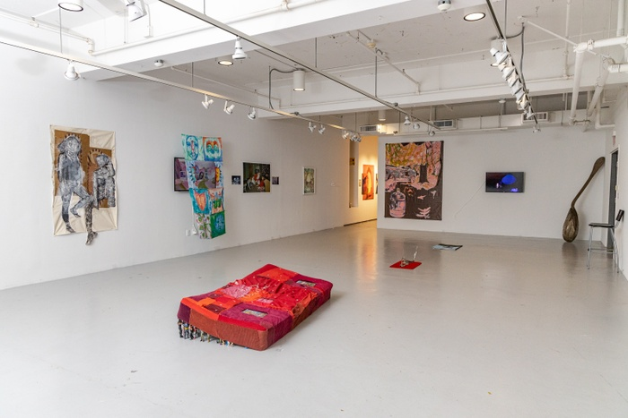

October 17 – November 11, 2022

Featuring work by Adam Amram, Andie Clarkson, Andrew Ordonez, Avion Pearce, Baxter Koziol, Claire Hungerford, Creighton Baxter, Daedalus Li, Darby Routtenberg, Darnell Henderson, Earthen Clay, Elli Fotopoulou, Eloise Hess, Haleigh Collins, Irisol Gonzalez-Vega, Ivana Dama, Jarod Lew, Julio Correa, June Lihua Yu, Junyan Hu, Justin Dumas, Kaming Lee, Katharen Wiese, Kayla Hawkins, Ken Wenrui Zhao, Laura Camila Medina, Lauren Klotzman, Lobbin Liu, Louise Mandumbwa, Madeleine Gray, Marcelline Mandeng Nken, Mei Kazama, Michael Cuadrado, Mike Picos, Nadir Souirgi, Neeta Patel, Orlando Porras, Pat Garcia, Patrick Henry, Rachel Youn, Rafael Villares, Ricardo Galvan, Sara Duell, Shelli Weiler, Siri Lee, Sydney Cain, Tanner
Pendleton, V Yeh, Whitney Klare, Xinyi Liu, Y. Malik Jalal, Yacine Fall, and Zoe Cir